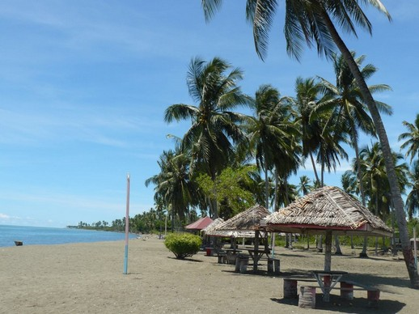

1.pantai lombang
Pantai Lombang adalah salah satu pantai yang terletak di kabupaten Sumenep, Madura. Pantai ini tepatnya terletak di sebelah timur Sumenep, kira-kira 25km dari Kota Sumenep tepatnya di Kecamatan Batang-Batang. Pantai Lombang merupakan salah satu wisata alam unggulan di Bumi Sumekar. Di pantai ini, selain deburan ombak yang cukup tenang dan pasir putih yang sangat halus, para pengunjung juga akan disuguhi dengan rimbunnya pohon cemara udang yang berjajar mengikuti garis bibir pantai.
2. Nuansa Hawaii di Madura – Gili Genting Sumenep

Tidak sedikit destinasi wisata ayik di Gili Genting, mulai dari pantau Sembilan hingga Pantai Kahuripan. Pemandangannya juga eksotik abis, lho! Bahkan, saking indahnya, tidak sedikit yang menyebut pemandangan di Gili Genting bak di Hawaii. Berlebihan? Buktikan sendiri!
3. Destinasi wisata ngehits di Sumenep – Boekit Tinggi Daramista

Destinasi wisata di Madura ini terbilang baru dan sedang ngehits di kalangan Gen-Z. Maklum, tempat ini menawarkan beragam spot asyik untuk eksis lewat media sosial. Namun secara keseluruhan Boekit Tinggi Daramista cocok untuk segala kalangan. Kamu akan bisa melihat panorama Sumenep dari sisi yang berbeda, sekaligus menikmati udara yang sejuk. Banyak tempat asyik untuk berselfie juga, lho!